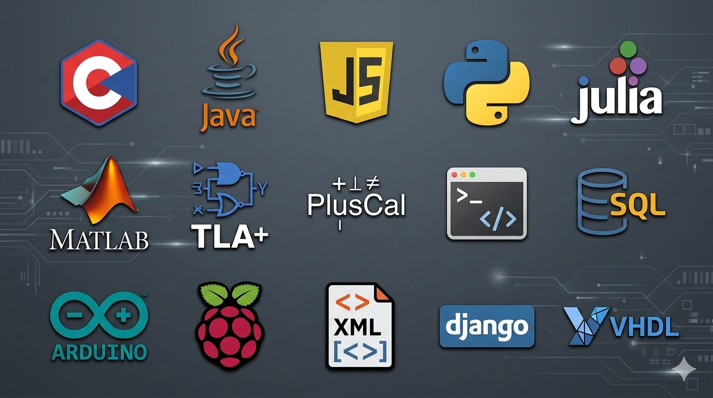

Data & Machine Learning
- Análisis de datos, extracción de características y clasificación automática.
- Aplicación de SVM y técnicas de machine learning clásico sobre señales biomédicas.
- Tratamiento de datos para monitorización, analítica y apoyo a la decisión.
Machine Learning SVM Data Analysis Data Processing EEG ECG

Desarrollo Web y Backend
- Desarrollo de aplicaciones web con Django, HTML, CSS y Bootstrap.
- Implementación de APIs REST y servicios backend con FastAPI.
- Diseño de dashboards y visualización web de datos en tiempo real.
HTML CSS Bootstrap Django FastAPI REST API Dashboard
IoT
- Diseño de sistemas IoT con sensorización, telemetría y backend desacoplado.
- Integración de adquisición de datos, broker MQTT, base de datos y dashboard web.
- Arquitectura modular orientada a monitorización y apoyo a la decisión.
IoT MQTT Sensors Telemetry SQLite
Hardware, Robótica y Embebidos
- Desarrollo de prototipos con Arduino, Raspberry Pi y sensores físicos.
- Control de actuadores, adquisición de datos y experimentación con hardware real.
- Integración de electrónica, software y comunicaciones en sistemas funcionales.
Arduino Raspberry Pi Sensors Electronics Embedded Systems
Sistemas y Automatización
- Trabajo en entornos Linux para desarrollo, pruebas y despliegue de servicios.
- Automatización de tareas mediante scripting y ejecución de procesos coordinados.
- Gestión de servicios, entornos virtuales y herramientas de desarrollo colaborativo.
Linux Bash Git Services Virtual Environments
Dashboards, Minería de Datos y Low-Code Apps
- Creación de dashboards para visualización de datos y monitorización técnica.
- Trabajo con la plataforma DataMiner para observabilidad y gestión de sistemas.
- Automatización y desarrollo de soluciones mediante scripts y herramientas low-code.
DataMiner Dashboards Low-Code Apps Monitoring Automation

Redes y Protocolos
- Diseño y análisis de redes TCP/IP y arquitecturas de comunicación.
- Estudio y configuración de protocolos como TCP, DNS, routing dinámico y mensajería MQTT.
- Integración de sistemas distribuidos y comunicaciones entre dispositivos.
TCP/IP DNS Routing MQTT Networking
Comunicaciones Inalámbricas
- Planificación y simulación de enlaces y redes inalámbricas.
- Diseño de cobertura WiFi, redes 5G y análisis de comportamiento radioeléctrico.
- Estudio de rendimiento, movilidad, cobertura e interferencias.
WiFi 5G RF Radio Planning Wireless

Comunicaciones Satelitales
- Simulación de sistemas de comunicación sobre constelaciones LEO y GEO.
- Modelado de transmisión segura y análisis de cobertura.
- Estudio técnico de escenarios de propagación y rendimiento del enlace.
Satellite LEO GEO MATLAB Propagation
Seguridad y Calidad
- Buenas prácticas de secure coding y desarrollo robusto.
- Verificación y modelado formal con TLA+ y PlusCal.
- Atención a trazabilidad, validación y fiabilidad del software.
Secure Coding TLA+ PlusCal Software Quality

Software
- Desarrollo de aplicaciones en Python, C, C# y Java.
- Programación científica y técnica con MATLAB y Julia.
- Diseño de lógica, algoritmos y automatización mediante scripts.
Python C C# Java Julia MATLAB SQL Shell